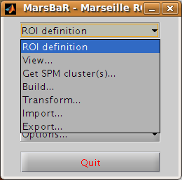
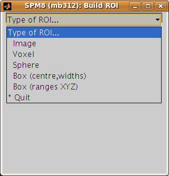

Defining ROIs#
The preprocessing script has already run an SPM model for run 2 (and run 1 and run 3). Now we need to find an activation cluster in the visual cortex.
Go to the MarsBaR window, and click on ROI definition. You should get a menu like this:
Interface summary - the ROI definition menu
- View
displays one or ROIs on a structural image.
- Get SPM cluster(s)
uses the SPM results interface to select and save activation clusters as ROIs.
- Build
gives an interface to various methods for defining ROIs, using shapes (boxes, spheres), activation clusters, and binary images.
- Transform
offers a GUI for combining ROIs, and for flipping the orientation of an ROI to the right or left side of the brain.
- Import
allows you to import all SPM activations as ROIs, or to import ROIs from cluster images, such as those written by the SPM results interface, or from images where ROIs are defined by number labels (ROI 1 has value 1, ROI 2 has value 2, etc.). Similarly
- Export
writes ROIs as images for use in other packages, such as MRIcro.
Defining a functional ROI#
We are going to define the functional ROI using the SPM analysis for
run 2. Select Get SPM cluster(s)…: from the menu. This runs the
standard SPM results interface. Use the file selection window that SPM
offers to navigate to the sess2/SPM8_ana directory. Select the
SPM.mat file and click Done. Choose the stim_hrf t contrast from
the SPM contrast manager, click Done. Then accept all the default
answers from the interface, like this:
Prompt |
Response |
|---|---|
apply masking |
none |
title for comparison |
stim_hrf |
p value adjustment to control |
none |
threshold {T or p value} |
0.05 |
& extent threshold {voxels} |
0 |
Technical note - MarsBaR and SPM designs
For the large majority of tasks, MarsBaR can use SPM designs interchangeably. For example, when running with SPM5, you can load SPM99 designs and estimate them in MarsBaR; you can also estimate SPM5 designs from MarsBaR, even if you are using - say - SPM99. However, MarsBaR uses the standard SPM routines for the ‘Get SPM cluster(s)’ routines. This means that if, for example, you are running SPM5 you can only get clusters from an SPM5 design and you can only get clusters from an SPM99 design if you are running SPM99.
Now you have run the Get SPM cluster(s) interface, you should have an SPM activation map in the graphics window:
Meanwhile, you may have noticed there is a new menu in the SPM input window:
Another thing you may not have noticed is that the matlab working
directory has now changed to the sess2/SPM8_ana. SPM does this to be
able to keep track of where its results files are.
Move the red arrow in the SPM graphics window to the activation cluster in the
visual cortex. You can do this by dragging the arrow, or right-clicking to the
right of the axial view and choosing goto global maxima.
When the red arrow is in the main cluster, click on the Write ROI(s) menu in the SPM input window and select Write one cluster.
Interface summary - Write ROI(s)
- Write one cluster
writes out a single cluster at the selected location.
- Write all clusters
writes all clusters from the SPM map; MarsBaR will ask for a directory to save the files, and a root name for the ROI files before saving each ROI as a separate file.
- Rerun results UI
restarts the SPM results interface as if you had clicked on the SPM results button; Clear clears the SPM graphics window.
After you have selected Write one cluster, MarsBaR asks for details to save with the ROI, which are a description, and a label. Both provide information about the ROI for statistical output and display. The label should be 20 characters or so, the description can be longer. For the moment, accept the defaults, which derive from the coordinates of the voxel under the red arrow and the title of the contrast:
Prompt |
Response |
|---|---|
Description of ROI |
|
Label for ROI |
|
After this, MarsBaR offers a dialog box to give a filename for the
ROI. By default the offered filename will be
stim_hrf_-9_-93_-15_roi.mat in the sess2/SPM8_ana directory. For
simplicity, why not accept the default name and click Save to save the
ROI.
Technical note - ROIs and filenames
MarsBaR stores each ROI in a separate file. In fact, the files are in
the Matlab .mat format. MarsBaR will accept any filename for the
ROI, and can load ROIs from any file that you have saved them to, but
it will suggest that you save the ROI with a filename that ends in
_roi.mat. This is just for convenience, so that when you are asked to
select ROIs, the MarsBaR GUI can assume that ROI files end with this
suffix. It will probably make your life easier if you keep to this
convention.
Review the ROI#
We can now review this ROI to check if it is a good definition of the visual cortex. Click on the ROI definition menu in the MarsBaR window, and select View…. Choose the ROI and click Done. Your ROI should be displayed in blue on an average structural image:
Interface summary - the view utility
The view utility allows you to click around the image to review the ROI in the standard orthogonal views. You can select multiple ROIs to view on the same structural. The list box to the left of the axial view allows you to move to a particular ROI (if you have more than one). When the cross-hairs are in the ROI, the information panel will show details for that ROI, such as centre of mass, and volume in mm. The default structural image is the MNI 152 T1 average brain; you can choose any image to display ROIs on by clicking on the Options… menu in the MarsBaR window, then choosing Edit Options…, followed by Default structural.
Refining the ROI#
Now we have reviewed the ROI, we see that the cluster does include visual cortex, but there also seems to be some connected activation lateral and inferior to the primary visual cortex. The cross-hairs in the figure are at something like the border between primary visual cortex and more lateral voxels. Ideally we would like to restrict the ROI to voxels in the primary visual cortex.
We can do this by defining a box ROI that covers the area we are interested in, and combining this with the activation cluster.
Defining a box ROI#
To decide on the box dimensions, click around the ROI in the view interface and note the coordinates of the cross-hairs that are shown at the top of the bottom left panel. This may suggest to you, as it did to us, that it would be good to restrict the ROI to between -20 and +20mm in X, -66 to -106mm in Y, and -20 to +7mm in Z.
To define this box ROI, click on ROI definition, and choose Build…, . You will see a new menu in the SPM input window:
From the menu, select Box (ranges XYZ). Answer the prompts like this:
Prompt |
Response |
|---|---|
[2] Range in X (mm) |
-20 20 |
[2] Range in Y (mm) |
-66 -106 |
[2] Range in Z (mm) |
-20 7 |
Description of ROI |
box at -20.0>X<20.0 -106.0>Y<-66.0 -20.0>Z<7.0 |
Label for ROI |
|
Filename |
|
The last three values here are the defaults.
To check this is as you want it, choose ROI Definition, View, select
both of box_x_-20_20_y_-106_-66_z_-20_7_roi.mat and
stim_hrf_-9_-93_-12_roi.mat, in that order, and click Done. You
should see the box in blue, with the activation cluster overlaid in red.
We now need to combine the two ROIs, to select only those voxels that are shared by the box and the activation cluster.
Combining ROIs#
Choose ROI Definition, Transform… A new menu comes up in the SPM input
window. Choose Combine ROIs; select both the box and the cluster ROIs, click
on Done. The prompt now asks for a function with which to combine the ROIs.
In this function, the first ROI you selected is r1, and the second ROI is r2.
Here we want to get the overlap, and this is represented by the logical AND
operator, which is & in Matlab. Enter the function r1 & r2.
Technical note - combining ROIs
You can use most mathematical functions to combine ROIs. If you wanted to
combine two ROIs, so the new ROI has all the voxels in ROI 1 and all the
voxels in ROI2, you could use the function r1 | r2 (read as “r1 or
r2”). If you wanted only the voxels in ROI 1 that are not in ROI 2: r1 &
~ r2. Similarly, you can choose more than two ROIs and combine them. The
function (r1 & r2) & ~r3 gives all the voxels that in both of ROI 1
and ROI 2, but excluding those voxels that are in ROI 3.
Be careful: r1 & r2 gives all the voxels that are in ROI 1 and in ROI
2 - so r1 & r2 is the intersection of ROI 1 and ROI 2. r1 | r2
gives the voxels that are in either of ROI 1 or ROI 2 - so r1 | r2 is
the union of ROI 1 and ROI 2.
After this, accept the default description, set the label to something like
“Trimmed stim run 2”, and save the ROI as trim_stim_roi.mat.
Writing the ROI as an image#
Just for practice, let us write our new ROI as a binary image. You might want to do this so you can review the ROI using another program, such as the excellent MRIcro. Click on ROI definition, then Export…. Select image from the new menu in the SPM input window, and choose the new trim_stim_roi.mat as the ROI to export. Another menu appears, asking for a Space for ROI image. The three options are Base space for ROIs, From image, or ROI native space.
Technical note - ROIs and image spaces
An ROI can be one of two fundamental types: a shape (such as a box or sphere) or a list of points (such as an activation cluster or coordinates read in from an ROI in an image). Shape ROIs know nothing about such vulgarities as voxels, they are abstract concepts waiting to be applied. In order to display shapes, or write them to images, or combine them with other ROIs, we need to convert them to point lists in a certain space – with dimensions in X Y and Z, and voxels with specified sizes. For example, when MarsBaR combines ROIs, it needs some default space (dimensions, voxel sizes) in which to define the new point list ROI. By default, this is the space of the MNI template; so the Base space for ROIs in the menu above will be MNI space. This is a good space to use if you are working with spatially normalized data, but ROIs are often defined on a subject’s data before spatial normalization. In this case, it may be more useful to set the ROI base space to match the subject’s own activation images, using Options, Edit options from the MarsBaR window.
The issue of the ROI space comes up here, because we need to define what dimensions and voxels we should use when writing the image. We can either write the image using the Base space, or we can use some arbitrary space defined by an image, or we can get the space directly from the ROI. Here, the ROI is an activation cluster, and the native ROI space for an activation cluster uses the minimum dimensions necessary to hold all the voxels in the ROI. An ROI image for this cluster using native space uses minimum disk storage, but does not give a good impression of the ROI location when displayed in, for example, MRIcro.
In our case, the data are spatially normalized, and so are in the space of the MNI template. The MNI template space is the default base space for ROIs, so select Base space for ROIs, choose a directory to save the image, and accept the default filename for the image, which should be trim_stim. You can check this has worked, by finding the SPM buttons window, selecting Display, and choosing the new trim_stim.img.